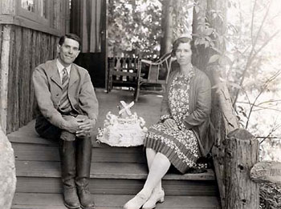

Yosemite Winter Club History
 In the fall of 1928, Donald Tresidder, President of the Curry Company formed the Yosemite Winter Club to ‘encourage and develop all forms of winter sports and to advertise and exploit the great advantages, beauties, and healthy benefits of winter in the California Sierra to all lovers of outdoor life.’
"In its eighty plus year span to
the present day, the club has
played a leading role in the
evolution of winter sports in
California.” (Magic Yosemite
Winters by Gene Rose; 1999:21). During
the first five years of the Club’s
formation, Badger Pass Ski resort
opened and tobogganing and ice
-skating took off in Curry Village.
Backcountry skiing was
encouraged when the Tressiders had
the Snow Creek Cabin constructed
near the north rim of Yosemite
Valley. By 1941, a second ski hut
was built at Ostrander Lake. Both
Snow Creek and Ostrander remain
popular overnight, backcountry
destinations, while ice-skating at
Curry Village, and skiing at Badger
Pass remain popular front-country
venues.
Today, the Yosemite Winter Club
is comprised of hundreds of members
who share enjoyment of winter
sports in Yosemite. The Winter Club
remains tightly linked with the
National Park Service and
Yosemite’s primary concessionaire,
Aramark.
The purposes of this club are to
foster regional amateur and
recreational Nordic and Alpine snow
skiing, snowboarding, skating
competitions and events, while
supporting and developing amateur
athletes and recreational winter
sport enthusiasts for such
competitions and events.
Pray for Snow
Join us for the membership and kick-off dinner/Ski Swap on Thursday, November 2, 2017 from 5:00 pm to 9:00 pm. Dinner will be held at the Yosemite Lodge Garden Terrace. It will be a great night to get excited about the upcoming season!
Snow Ball
The annual Snow Ball will take place on Friday, February 9, 2018 at the Majestic Yosemite Hotel from 6:00 pm to 10:00 pm. Enjoy the company of your fellow Winter Club members while consuming appetizers, drinks, and desserts. We will also have music and a fabulous Silent Auction!
Silver Ski
Yosemite Winter Club in coordination with Far West Skiing and the United States Ski and Snowboard Association will host the annual Silver Ski Race. The race will take place on Saturday, March 17 and Sunday, March 18, 2018. Volunteers are needed. If interested contact Mato Parker at yoskiteam@gmail.com